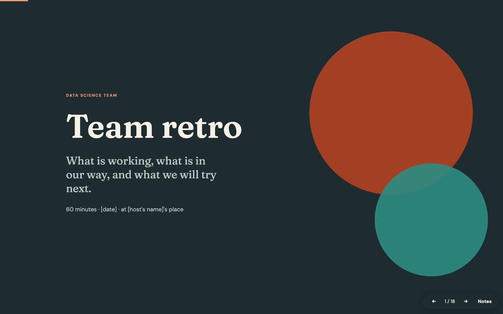
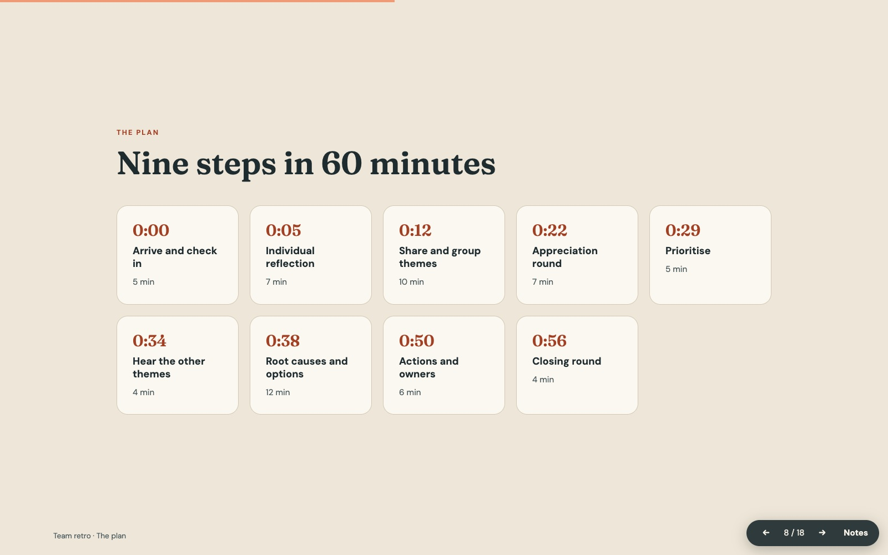

Work · September 2026
One prompt, one retro
Team retro. A retrospective with my team on how we work, and a test of how far Opus 5.5 gets from a single prompt. Everyone joins by phone, the AI facilitates out loud, and a live screen turns notes into themes, votes and actions.
Tools · TeachingprototypeSep 2026

This started as two things at once.
The first was a real need. I wanted to sit down with my team, away from the office, and talk openly about how we work: what goes well, what slows us down, how we treat each other and what we want to try next. Not another status meeting.
The second was curiosity. Opus 5.5 had just come out and I wanted to see how far it could get from a single prompt. No back and forth, no fixing things one message at a time: one careful description of the team, the topics and the hour we had, and then see what came back.

What came back was a complete pre-read for the team. It asked everyone to arrive with four short notes: one thing to keep, one to change, one to try and one appreciation.
Four groups of questions helped people find those notes: looking back, friction and challenges, team dynamics and looking forward. One ground rule was there from the start: describe situations and processes, never individuals.

From there it became an app. Everyone joins by scanning a QR code with their phone. Notes are written silently, then Claude reads them and proposes themes: forty separate notes are too many to discuss, five topics are not. A Kokoro voice speaks the introduction to each step, and the screen counts down the time.

Everyone has three votes. The top three themes get root causes, options and owners with dates, and the others still get one sentence each: urgent, or park it.
Two things stayed with me. Timeboxes enforced by a screen are easier to accept than ones enforced by a person, so I could take part in the conversation instead of watching the clock. And a single, well-written prompt can now produce something you would actually use with real people. Only the facilitator's prompts left the laptop, without names.
Made with
Node.jsClaudeKokoro TTS
Nearby projects
 Teaching
Six papers, seventy minutes, every two weeks
A work study group where five or six people each present, in ten minutes, one paper they read in depth. GenAI, recommenders and the next best action, with a library, session notes and a radar of new papers.
Teaching
Six papers, seventy minutes, every two weeks
A work study group where five or six people each present, in ten minutes, one paper they read in depth. GenAI, recommenders and the next best action, with a library, session notes and a radar of new papers.
 Seeing · Tools
Conducting my desktop with bare hands
Gesture control for macOS. Swipe between desktops in mid-air, pinch to click, throw windows to the other screen.
Seeing · Tools
Conducting my desktop with bare hands
Gesture control for macOS. Swipe between desktops in mid-air, pinch to click, throw windows to the other screen.
 Teaching
Back at the keyboard, one query at a time
A seven-day SQL course I built for myself to get hands-on again, and to test how well a learning path can be tailored to one person. A real SQLite engine runs in the browser, with graded exercises.
Teaching
Back at the keyboard, one query at a time
A seven-day SQL course I built for myself to get hands-on again, and to test how well a learning path can be tailored to one person. A real SQLite engine runs in the browser, with graded exercises.
Comments
Sign in with GitHub to leave a comment or react.